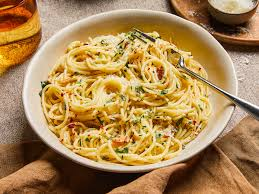

Aglio e Olio Pasta

Description
Spaghetti Aglio e Olio is a classic Italian pasta dish that is quick and easy to prepare.
Ingredients
- 1 pound spaghetti: (about 450 grams)
- 1/3 cup extra-virgin olive oil: (about 75 milliliters)
- 5 cloves garlic: (thinly sliced)
- 1/2 teaspoon crushed red pepper flakes: (adjust to taste)
- 1/2 cup chopped parsley: (about 60 grams)
- 1 tablespoon fresh lemon juice: (optional)
- 1/2 cup grated Parmesan cheese: (about 60 grams)
- Salt and freshly ground black pepper: to taste
Steps
- Bring a large pot of salted water to a boil. Add the spaghetti and cook according to package directions until al dente. Reserve 1 or more cups of the cooking liquid before draining the pasta into a colander.
- Meanwhile, heat the olive oil in a skillet over medium heat. Add the garlic and cook, stirring constantly, until the garlic is tender and very lightly brown (be careful not to burn it!).
- Stir in the crushed red pepper flakes. Add the cooked pasta to the skillet with the garlic and oil. Toss to coat, adding some of the reserved pasta water if you like to reach your desired consistency.
- Add the parsley and lemon juice (if using) and toss again. Season to taste with salt and freshly ground black pepper.
- Serve topped with grated Parmesan cheese.